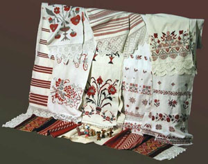
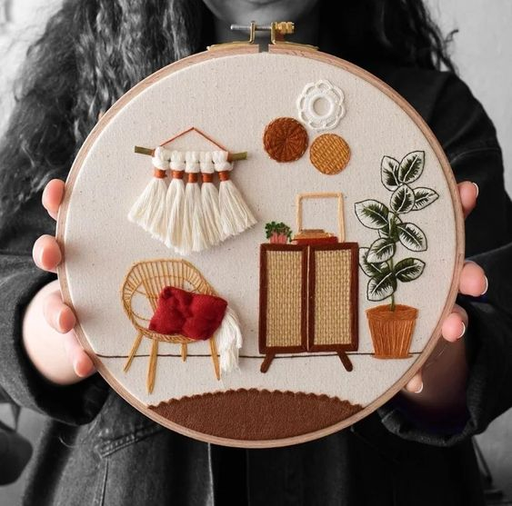

Первобытные женщины использовали все, что было под рукой и что могло заменить иголку с ниткой. Иголки делали из дерева или же из рыбьих костей, а ниткой служили волокна растений, жилы животных, шерсть и даже волосы. Первые стежки несли скорее практическую пользу: женщины сшивали куски кожи, которые они носили в качестве одежды. Затем они начали приукрашивать свои одеяния примитивными орнаментами.
Отсюда и берет свое начало вышивание.

В языческие времена славяне начали сильно придавать значение вышитым орнаментам. Все, что ни вышивалось, несло какой-то «подтекст». Особенно в почете были вышитые полотенца. На них изображали пестрые мотивы, которые символизировали достаток в доме и здоровье. С их помощью проводили разные ритуалы. Также обшивали повседневную и праздничную одежду, постельное белье, занавески и др.
В Древней Руси все женщины хорошо вышивали. На Руси женщины обычно вышивали такими видами шва: вышивка крестом, полукрест, счетная гладь, мелкая белая строчка, сквозное шитье. Так как все материалы, необходимые для вышивания, были очень дорогими, то примерно до XVII-XVIII ст. н. э. это занятие было прерогативой женщин из богатых семей, а также монахинь. После этого переломного периода вышивкой начали заниматься и обычные крестьянки. Уже с семилетнего возраста девушки готовили себе приданое, вышивая полотенца, скатерти и красивую одежду, по качеству которой перед свадьбой судили о трудолюбии невесты. Вышивкой также украшали иконы, скатерти, полотенца, головные уборы, обувь, конскую сбрую.
Раньше по одежде можно было определить статус человека. Богатые люди носили одежду, вышитую золотыми и серебряными нитями, в то время как крестьяне довольствовались самыми обычными нитками. У каждого вышитого узора было свое значение. Например, ромб в вышивке — это символ плодородия, мак вышивали, чтобы защититься от любого зла, рыбу — к финансовому благополучию. А если девушка хотела выйти замуж, то она вышивала пионы.
Что касается других стран, то в Риме и Греции очень почитали вышивку золотыми нитями. Это были неимоверно роскошные орнаменты, часто они украшали шелковые ткани. Первая вышивка на ткани появилась в Древнем Китае. Шелковая ткань начала производиться именно там, и стоила безумно дорого. Поэтому, заниматься вышивкой могли позволить себе только очень знатные дамы из высшего общества. Они вышивали золотыми и серебряными нитками, очень искусно. Вышитые изделия сохранились и до наших дней. Также пригодной для вышивания была шерстяная ткань, но появление льняной ткани значительно облегчило работу, так как структура волокон льна и белизна ткани отлично подходили для вышивки. Родиной льна считается древняя Индия, где впервые было выращено растение.

В Древнем Египте вышивка обозначала социальный статус человека. Самая красивая, яркая и богатая изготовлялась для царских особ, фараонов, а у низших слоев была более скромной или вообще отсутствовала. В Древней Греции также использовали вышивку, доказательством этого послужили находки домашней утвари, где женщины вышивали на пяльцах.
Самый известный вид вышивки — это конечно же вышивка крестом, который рассматривали как оберег защищающий дом и его жителей. Также распространена вышивка гладью и мережка. Многое означал и цвет, например: красный — любовь, зелёный — обновление жизни, а серый — печаль.
В наше время вышивка также актуальна, хотя значение многих символов уже потеряно, но современные мастерицы все равно продолжают использовать старинные орнаменты в своих работах. Сегодня расшитое изделие есть практически у каждого. Даже известные дизайнеры используют вышивку в своих творениях, а рекламные агентства нашивают свои логотипы на одежду для продвижения товаров.
Стала популярна и машинная вышивка, благодаря которой массово создается одежда с необычными и сложными узорами и украшениями, такими как вышивка стразами, пайетками и даже аппликациями. Не так давно стала возможна и 3-D вышивка, с помощью которой создается эффект объёма. Мастерицы знакомятся на вышивальных форумах, делятся между собой опытом и различными узорами, создают сообщества вышивальщиц и таким образом вносят свой вклад в развитие вышивки.